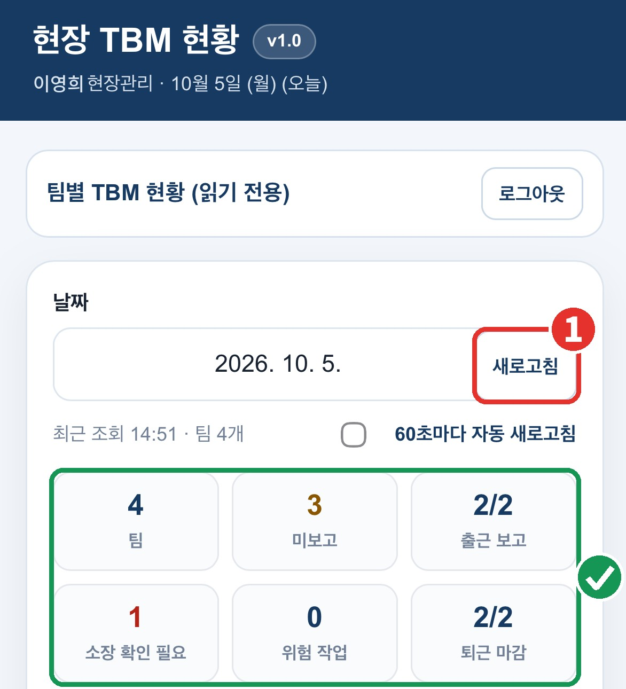
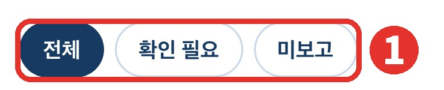
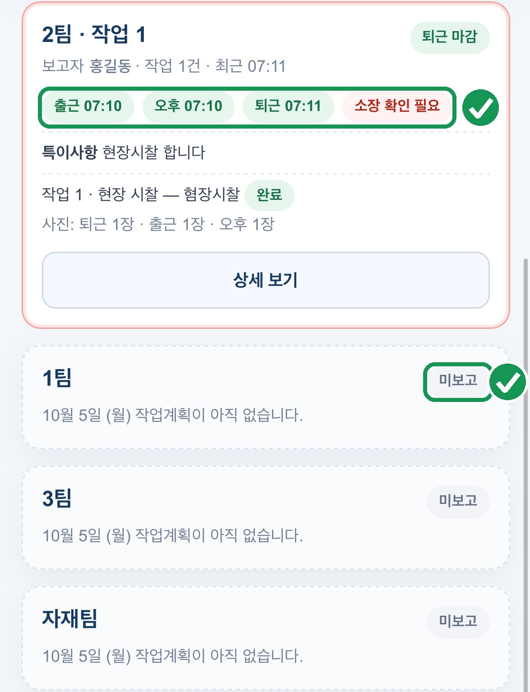
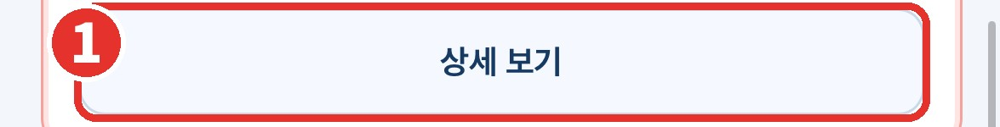
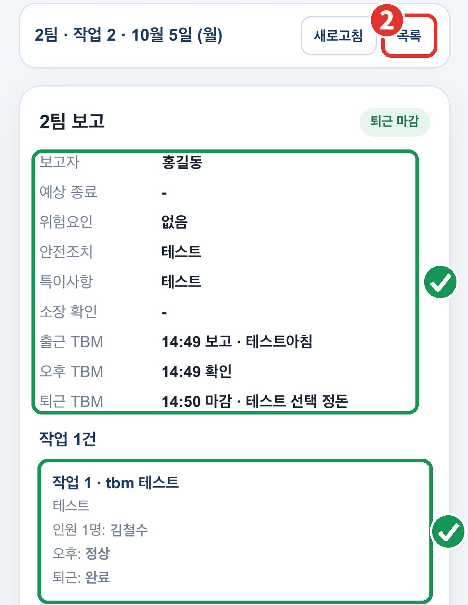
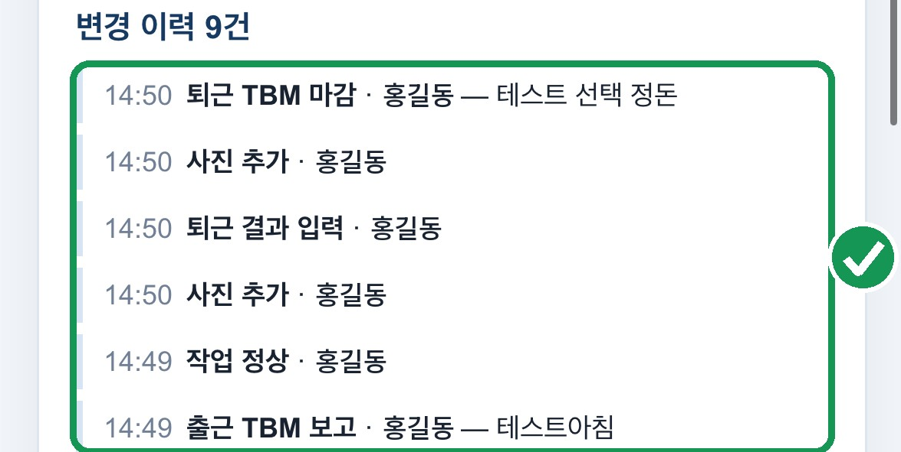
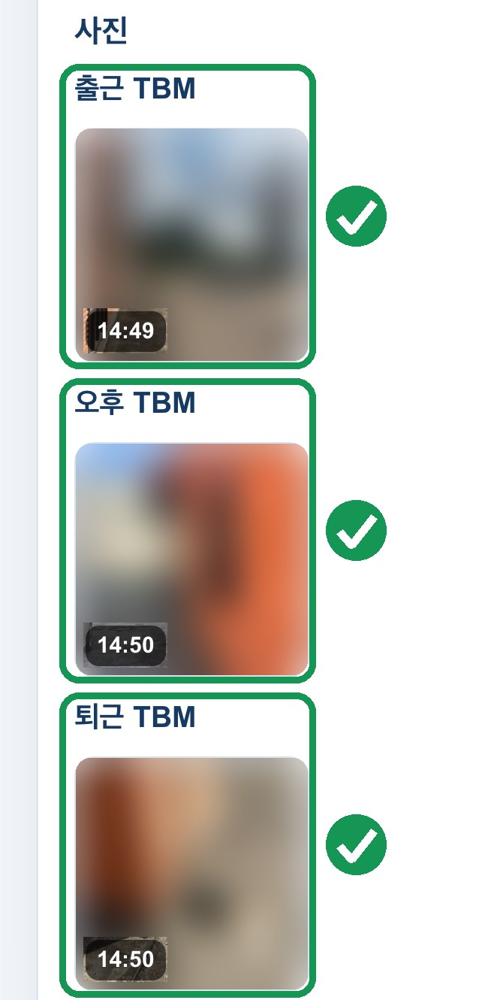

1
1단계
로그인
팀장과 같은 「현장 업무 통합 로그인」 화면을 씁니다. 로그인하면 「현장 TBM 현황」 화면이 열립니다.
- 1이름을 입력합니다.
- 2휴대폰 번호 뒤 4자리를 입력합니다.
- 3로그인 버튼을 누릅니다.
예) 휴대폰 번호가 010-1234-5678이면
5678을 입력합니다.
5678을 입력합니다.

소장 TBM 사용 가이드 v1.02 / 6
팀별 TBM 보고를 휴대폰으로 확인하는 방법입니다.
팀장과 같은 「현장 업무 통합 로그인」 화면을 씁니다. 로그인하면 「현장 TBM 현황」 화면이 열립니다.
날짜를 확인하고 숫자로 오늘 보고 상황을 봅니다. 최신 보고를 보려면 「새로고침」을 누릅니다.

숫자 칸 아래에 팀별 보고 카드가 나옵니다. 버튼을 눌러 보고 싶은 팀만 골라 볼 수 있습니다.


카드에서 특이사항, 작업 결과(완료 등), 사진 장수도 바로 볼 수 있습니다.
팀 카드의 「상세 보기」를 누르면 그 팀의 보고 내용을 모두 볼 수 있습니다.


상세 화면을 아래로 내리면 팀장이 보고한 실제 현장 사진과 변경 이력이 나옵니다. 소장 화면에서는 조회만 합니다.

예: 출근 TBM 보고 · 작업 정상 · 사진 추가 · 퇴근 결과 입력 · 퇴근 TBM 마감
